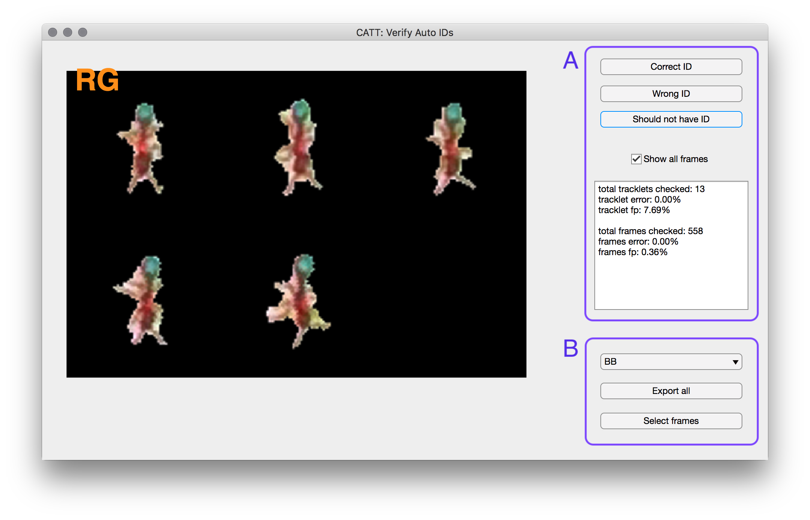

Classification workflow
In this step we will classify each tracklet that was marked as possible single ant tracklet. Each of these tracklet will be assigned as either:
- An ant ID from the list of possible IDs
- A non-ant tracklet, wither as a general category or a specific one if such exist in the classifier.
- A multi ant tracklet
- An ambigious tracklet (‘Unknown’) in case the classifier couldn’t make a decision.
Each tracklet is classified by first classifying all blob images belonging to that tracklet, using the blob classifier and then weighting these classifications to produce a whole tracklet classification. The blob classifier is a trained deep convolutional network (CNN), that needs to be trained on a trainset of pre-classified blob images
Creating a training set
The blob classifier is a trained deep convolutional network (CNN), that needs to be trained on a trainset of pre-classified blob images. anTraX includes an interactive GUI application to prepare such a training set from a tracked experiment:
antrax extract-trainset <expdir>
Note that it might take a few minutes for the app to prepare the image dataset for labeling, especially if the experiment is long and/or multi colony.

The app will display blobs images from a randomly selected tracklet.
Merging training sets
The exported examples are saved as images in the experimental directory, under /session/classifier/examples/id/. When creating a classifier specific to that experiment, training can be done from that directory. But in order to create a general classifier to be used on many experiments, it is necessary to create a trainset that contain examples from a few experiments. This can be done with the command:
antrax merge-trainset <source-classdir> <dest-classdir>
This will merge all the examples from the source classifier directory (usually expdir/session/classifier) into the destination classifier directory. It is recommended to keep multi-experiment classifiers seperate from any specific experimental directory to avoid confusion.
Important: the user is responsible to make sure the label list matches when merging trainsets. Otherwise, problems might arise.
Training the classifier
antrax train <classdir>
Classifying tracklets
To run classification in batch mode:
antrax classify <experiments>
The experiments argument can be either a full path to an experimental directory, a full path to a text file with a list of experimental directories (all of which will run in parallel), or a full path to a folder that contains one or more experimental directories (all of which will run in parallel).
The classify command accepts the following options:
`–classifier
Explicit path to a classifier (.h5 file created by the train process). By default, anTraX will use the classifier file that exist in the default location in the experimental directory expdir/session/classifier/classifier.h5. If it doesn’t exist, an erorr will be raised.
--movlist <list of movie indices>
By default, anTraX will track all movies in the experiment. This can be changed by using this option. Example for valid inputs incluse: 4, 3,5,6, 1-5,7.
--session <session name>
If your experiment contains more than one configured session, anTraX will run on the last configured one. Use this option to choose a session explicitly.
Validating classification and retraining
The app will display random classified tracklets from the experiments. If the displayed tracklet was assigned with a valid ant ID, you can mark it as correct, wrong, or false positive (i.e. should not have been assigned with an ID). If the displayed tracklet was assigned with a non-ant label, you can mark it as false negative if it is an ant, or just skip to next to mark it as correct. Note that we don’t count correctness in assigning the various non-ant labels here. The stats will be appear in the text window, both as per-tracklet error and per-frame error. Ambiguous tracklets are shown but do not have an error response (saying ‘I don’t know’ is not considered an error).
When a tracklet is misclassified, or marked as unknown, you have the option to add its images as examples in the classifier directory. For doing that, choose the correct label from the dropdown menu. If you wish to export all images of that tracklet (be careful, always check the images first), press the Export all button. IF only a subset of frames are good examples, press the Choose frames button. A second window will appear:
In that window, frames from the tracklet will be presented one by one. For each, either select Import as ID if it is a good example (rule of thumb: if you can say which ant it is by this image alone), select Import as unknown if it is definitely an unrecognizable image. If in doubt, skip this frame by pressing Next.
Important: if you made an error while marking the tracklet as correct/wrong/etc, you can correct by going back and re-marking the tracklet, and it will fix the stats appropriately. However, if images from a tracklet were exported as examples under the wrong ID/label, it is not enough to re-export them under the correct label. You will have to open the classifier directory in the systems’s file explorer, look under the wrong label you exported, and delete the images. It is useful to sort by modification date and look at the most recently modified.
Classification is done by evaluating a trained tensor-flow neural network on each blob image. The classifier ‘lives’ in a self contained file, and can be shared between experiments. The classifier directory contains a file that stores the neural network topology and parameters in classdir/model.h5, and a sudirectory named examples that contains a data set of labeled images used for training. The example images are organized into subdirectories named by their labels.